Много ли вы знаете о войне? Не из книжек с сухими фактами и не из фильмов, где, зачастую, драматизм взвинчивают до предела, а из уст тех самых людей, для которых Великая Отечественная война является не просто историческим фактом, а отдельной вехой в жизни? Много ли вы знаете о том, какой была жизнь в концлагерях, в тылу? Как росли дети в деревнях, оккупированных немцами? А легко ли вам сейчас представить девушку, которая в 17 лет готова всё бросить и отправиться на фронт служить своему Отечеству?
Что уж там говорить — патриотизм сегодня не в моде. Большая часть молодых людей спит и видит тот день, когда сможет покинуть Россию и забыть о её существовании. Да, у нас здесь, само собой, много недостатков, много чего происходит вокруг, что ссорит нас, разочаровывает друг в друге, но остановитесь на минутку, отбросьте всю политику, оскорбления, дурные мысли, и попробуйте представить, как бы мы сейчас жили, если бы однажды весь наш народ не собрался воедино и не принёс этой стране мирное небо над головой? Никто, к счастью, не сможет ответить на этот вопрос.
В преддверии одного из самых светлых российских праздников, Дня Победы, мы собрали для вас несколько жизненных историй, которыми с нами поделились люди, имеющие непосредственное отношение к Великой Отечественной войне и тому времени. У всех этих личностей разные судьбы, но одна история, одна радость и одна боль. Данным проектом мы хотим не только пробудить в вас гордость за тех, кто спас нашу страну, но и за тех молодых людей, которые больше всего на свете любят наших Защитников, — за их внуков.
Неважно, участвовали ваши бабушки или дедушки в войне, — выделите немного времени и проведайте своих родных, обнимите их крепко, поблагодарите за всё и скажите, что любите. Если их уже нет в живых, то всё равно скажите им эти слова, мысленно, — они услышат их.
Важно, чтобы люди не забывали о тех великих подвигах наших предков, даровавших нам жизнь. Мы очень надеемся на то, что эта статья сможет значительно замедлить этот процесс.
8 сентября 1941 года в мой город Дятьково Брянской области вошли немцы, а ровно через 2 года — 8 сентября 43-го — меня вместе с моей семьёй (мамой и двумя моими младшими сестрами) угнали в концлагерь города Алитус, находившегося на территории Литвы. Уже спустя месяц нас перевели в латышский город Каунас. Перед тем как попасть в концлагерь на территории Польши, где я встретила конец войны, меня и мою семью собирались сжечь в печах. Нас и ещё несколько сотен человек привезли в место, название которого никто не знал, и где во дворе стояли две огромные печи, высотой не меньше 10-ти метров. Все подумали: ну всё, сейчас нас будут сжигать. В итоге, сжигать не стали, а провели в какое-то большое по площади помещение, где заставили раздеться догола. Это оказалось таким пыточным «купанием»: со всех сторон на нас пустили множество тонких струй ледяной воды, которые резали тело, как ножи. Нам с сёстрами досталось меньше всех, потому что мама в буквальном смысле накрыла нас своим телом и приняла основной удар на себя. Длилось это около 10-ти минут, после чего нас выпустили оттуда, погрузили в машины и увезли примерно за 20 км от этого места, в обычное поле, окруженное лесом. Там немецкие женщины-полицейские проводили отбор рабов, направляемых в концентрационные лагеря для работы на Германию. Оттуда я, две мои сестры и мама попали в один из польских концлагерей, расположенный в городе Свентохловице.
В этом концлагере находились, в основном, женщины из Украины. Когда они увидели нас, детей, то все как один начали плакать. На вопрос моей мамы о том, почему они плачут, ей ответили, что эти женщины очень переживают за нас, так как их собственных детей, которых забрали у них из лагеря, они уже никогда не увидят. В Свентохловице мы работали на большом металлургическом заводе, я была обычной чернорабочей. На этом заводе в основном находились польки, потому что большинство мужчин в этот период служило на фронте. Жили мы в небольших бараках, по 20 человек в каждом. Из еды нам давали хлеб, сделанный из древесной муки (опилок) ещё до 41-го года, и баланду, вроде жидких щей, из морковки, свёклы, картошки и прочего.
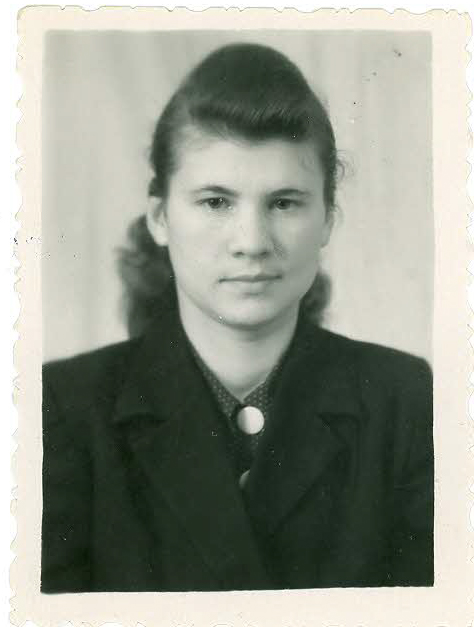Один раз из концлагеря был организован вывоз маленьких детей, видимо, для того, чтобы разобрать их на органы. Всех их согнали в один барак, объясняя это тем, что среди детей распространяется эпидемия кори. На следующее утро малышей уже не было в концлагере, и их никто никогда больше не видел. Моя младшая сестра чудом осталась жива: медсестра-украинка, которая отвечала за детей в этом «предсмертном» бараке, сказала моей маме, что не станет закрывать форточку рядом с местом, где как раз и лежала моя сестра. Ночью она успела вылезти в эту форточку, благодаря чему и осталась жива.
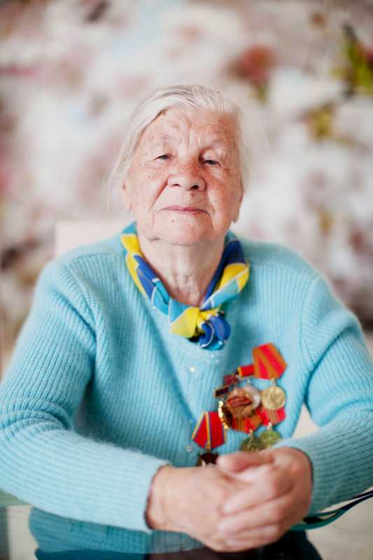В концлагере Свентохловице мы пробыли около полутора лет: освободили нас непосредственно перед концом войны в 45-м году. В один из дней, поздно вечером, все полицейские, которые охраняли концлагерь, куда-то скрылись, оставив при этом все бараки открытыми. Первыми в концлагерь вошли польские войска, и только потом — советская армия. Сколько было слёз и радости, когда пришли наши солдаты! Примерно через неделю прибыли военные машины, и всех нас перевезли в город Ченстахова, где всех зарегистрировали и выдали новые документы взамен тех, что у нас отобрали при отправке в концлагерь. Домой мы добирались как могли: ехали в товарных вагонах, — пассажирских ведь не было — иногда кто-то подбирал и подвозил.
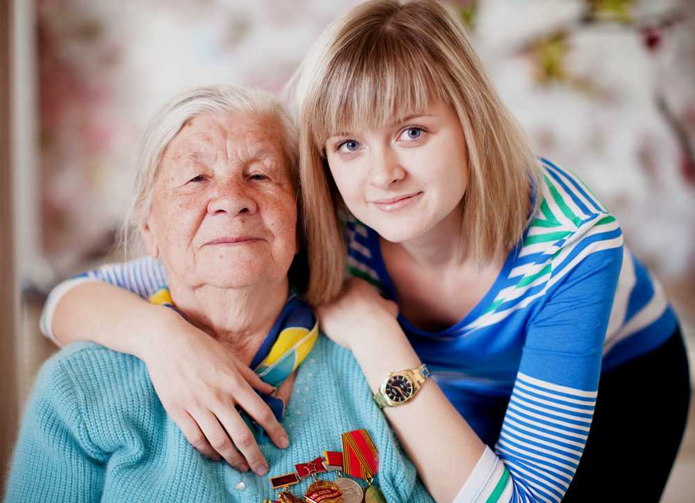Катя, внучка:
Я горжусь своей бабушкой, потому что она — неимоверная труженица! Война её очень сильно закалила. Она не только живёт в полную силу, но и вдохновляет на такую же жизнь всю нашу семью! В свои 83 года она участвует в жизни Комитета, проводит собрания, ездит на все мероприятия в Москву, ходит по ресторанам и занимается собственным огородом.
Бабуля с детства воспитывала во мне порядочного человека, помогала в школе, которую я закончила с золотой медалью. Я безумно благодарна ей за всё, что она делала для меня и делает по сей день. Я люблю её!
22 июня 1941 года я была в Москве. Был выходной день, я это чётко помню: все люди отдыхали, гуляли по городу. Я родом из деревни Ухолово, что в Рязанской области, а в столице находилась по той причине, что в то время работала домработницей в семье инженеров. Меня отправили в магазин за покупками, и я, проходя по Лубянскому проезду, обратила внимание на то, что повсюду были жуткие очереди. Не имея возможности что-то купить, я решила сообщить об этом хозяйке квартиры и позвонила ей по таксофону. В трубку мне прокричали взволнованным голосом: «Мотя, ты что! Война началась! Бросай все свои дела и беги домой!».
Как только началась война, всю московскую элиту первым делом эвакуировали из города. Семья, в которой я работала, относилась к её числу, поэтому я застала тот момент, когда они судорожно собирали свои вещи. Мать инженера, Наталья Александровна, дала мне в руки целый мешок с ценными вещами. Я, простая девушка, совсем не понимала, зачем мне всё это было нужно, но та сказала: «Ты, милая, не знаешь, что такое война. На ней всё пригодится. За кусок хлеба всё это отдашь!».

В столице остались только простые люди. С начала войны в Москве регулярно объявляли тревогу, словно в любую минуту могли начать бомбить. В случае опасности специальные дежурные загоняли всех жителей города в ближайшие станции метро. Вскоре мы с сестрой уже научились собираться за три секунды и наспех натягивать на себя по три платья, ведь каждый раз мог быть последним, и ты наверняка не мог знать, попадёшь ли ещё когда-нибудь домой. С этим связана забавная история: в метро мы любили смотреть на то, как кто одет, и как одеты мы сами. Часто смеялись, видя на женщинах платья задом-наперёд, а на мужчинах разные носки. Первые пришедшие по тревоге люди клали специальные доски на пути и размещались прямо на них. Если же тревога затягивалась, то мы брали одежду, которая была с собой, расстилали её на этих досках, делая, таким образом, из неё своеобразный матрац, после чего укладывали на них детей, а потом уже ложились сами. Благо, в подземке всегда было довольно тепло.
В метро мы пережидали все волнения около трёх раз: либо на станции «Дзержинская» (нынешняя «Лубянка»), либо на «Кировской» (сегодня — «Чистые пруды»). Каждый раз, когда мы там прятались, на поверхности ничего не происходило. Поначалу было очень страшно, но вскоре нам надоело всё это напряжение и беготня, поэтому, слыша сирену, мы оставались дома и боялись там. И, разумеется, ждали эвакуации из Москвы. Она не заставила долго себя ждать — меня с дочерью отправили в деревню Матыра Луховицкого района. Первым делом покормили в хорошей столовой, располагавшейся в здании школы, после чего погнали на поле, где нас ждала работа: нужно было вспахивать землю, сажать разные сельскохозяйственные и огородные культуры. Нас привезли туда группой, большая часть которой просто не представляла, что ей надо было делать. Благо, я выросла в деревне, поэтому могла работать сама и чему-то учить других. Периодически приезжали машины, забирали всё, что мы вырастили, и уезжали в неизвестном направлении.
В поле работали одни женщины и дети — все мужчины были на фронте. Тем не менее среди нас однажды оказался какой-то молодой парень, который ни с кем не разговаривал, и о котором никто ничего не знал. Он еле-еле работал, всё маялся, в-общем, вёл себя как лодырь. Мы полагали, что это был сын или родственник председателя нашего колхоза, который спрятал его там.
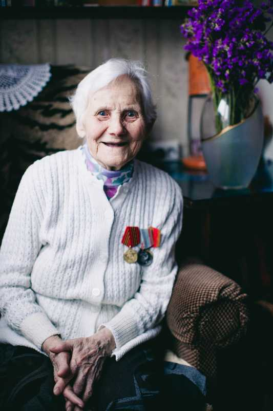На станции у нас находился зерновой ток, далеко от того места, где мы жили, поэтому нам приходилось таскать на спинах огромные мешки с зерном. Жаловаться не было времени — таскали их и стар, и млад. Самым сложным было забираться по лесенке и пересыпать это зерно в само хранилище, так как окошко, через которое это можно было сделать, располагалось выше нашего роста. Была у нас одна женщина, которая постоянно насмехалась над нами, крыла матом и говорила, что мы, мол, выбрали себе лёгкую работу. Пришёл бригадир и говорит ей: «Ларина, ты больше всех орёшь! Иди сама ссыпь зерно в амбар!» Разумеется, она не удержала на плече мешок, поскользнулась, упала и рассыпала всё его содержимое. И со второй попытки тоже. Вот такая у нас была «лёгкая работа».
Время от времени над нами летали самолёты, наши советские. Мы сильно не боялись их, даже когда ещё не разбирались в том, вражеский это или наш. Я всегда говорила: мы им не нужны, и нас бомбить не будут — им нужны более важные вещи, и они сами знают, какие.
Когда закончилась война, мы конечно, очень радовались! Я не очень хорошо помню тот момент, когда мы узнали о победе, потому что счастье заглушало всё остальное. Вернувшись в Москву, я сразу отправилась к сестре, где воссоединилась наша семья.
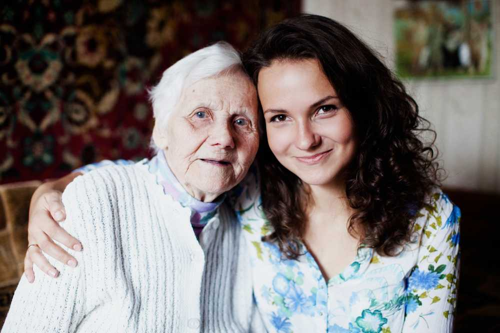Ксения, правнучка:
Самое удивительное в моей прабабушке — это её внутренний стержень и воля к жизни. Она очень трудолюбива, и всю жизнь окружала себя трудолюбивыми людьми. Бабушка вообще всегда притягивала к себе людей, она очень общительна и всегда оставляет только приятные впечатления о себе. Ещё одно качество, которое я люблю в ней, — это стремление к порядку. Она может сделать уют из всего на свете: даже в своём подвальчике, в котором она жила после войны, она смогла создать прекрасный уголок, в котором было приятно находиться. Если сейчас открыть её шкаф, то можно увидеть, что там всё разложено в идеальном порядке.
Я горжусь своей прабабушкой за то, что она никогда не унывает. Когда я пошла в школу, ей было уже довольно много лет, но это совсем не мешало ей брать в руки лыжные палки и бежать со мной на пруд, чтобы заниматься спортом. Этому стоит учиться! Пару лет назад мы пришли к ней в комнату, а она лежит на полу и не может встать. Оказывается, бабушка стригла ногти на ногах и для этого закинула ногу на подоконник! Мы, разумеется, начали лепетать: «Как же так! Ты что?». На это она удивлённо заявила, что всегда так делала, и что её просто-напросто занесло в сторону. В ней до сих пор бьёт ключом энергия, и когда в марте ей исполнилось 99 лет, она сказала, что мы её обманываем.
Было очень тяжело, но это война. Я стрелял — в меня стреляли, я предавал — меня предавали, я убивал — моих убивали. Страшная это вещь, война... В моей жизни их было четыре: советско-японские конфликты в районе озера Хасан и на Халкин-Голе, Великая Отечественная, а также советско-японская в 45-м году. Война началась для меня в 1938 году на Дальнем Востоке в городе Ерофей Павлович, а закончилась уже в польском Кракове в 45-м. Когда началась Великая Отечественная война, меня перебросили в действующую армию на запад, где позднее я оказался на 1-ом Украинском фронте. На тот момент я уже был комиссаром НКВД, политруком. Участвовал в освобождении Киева и форсировании Днепра, организовывал строительство переправы. Можно сказать, что я прополосовал всё от Дальнего Востока через юг и до Польши. И командовал, и командовали, и распоряжался, и распоряжались... Всякое было. После войны участвовал в разработке водородной бомбы, был членом команды Курчатова.
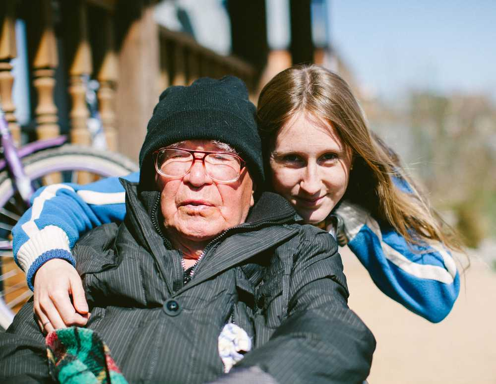Алёна, внучка:
Своим дедушкой я горжусь, в первую очередь, за то, что он мой дедушка. Пройдя четыре войны, к слову, без единого ранения, он полностью сохранил разум и дееспособность. Конечно, здоровье подкачивает, но, я думаю, вы знаете не так уж много людей, которые дожили до 99-ти лет. Плюс ко всему мой дедушка, как он уже упомянул, внёс большой вклад в развитие отечественной науки. Я уважаю его за стойкость характера и за присущую ему интеллигентность. Да, он настоящий советский интеллигент: читает много книг, очень подкован в разнообразных видах искусства. Помню, как в детстве он водил меня по московским музеям безо всяких экскурсоводов, сам всё рассказывал и показывал. У него есть огромная библиотека, которую он прочёл от корки до корки. До сих пор интересуется историей и даже время от времени цитирует те или иные научные источники.
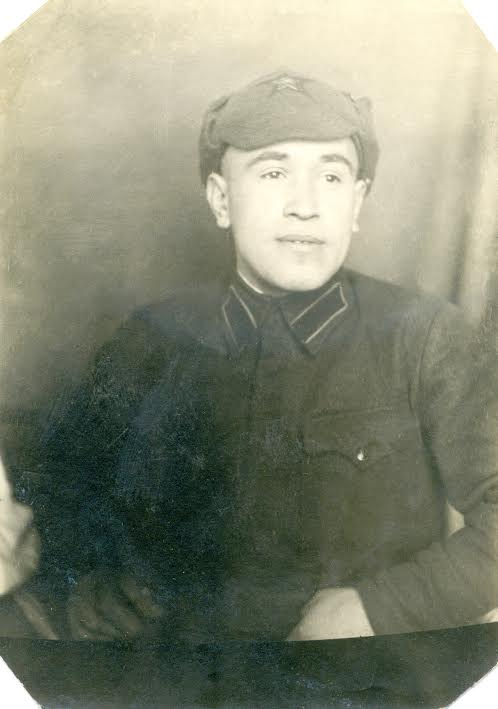 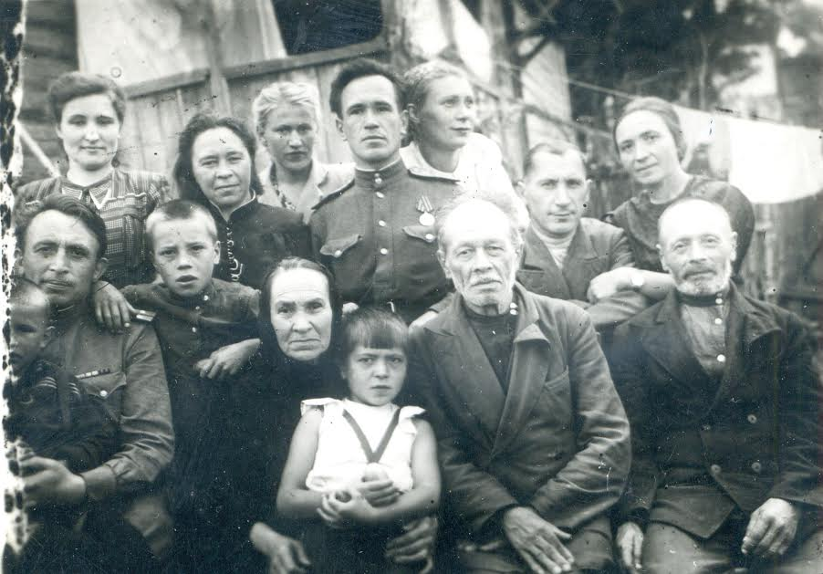 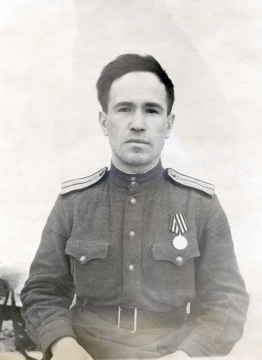 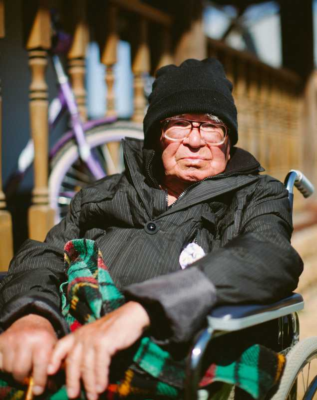Когда началась война, мне было 12 лет. Я жила в Люблино — тогда это ещё не считалось Москвой — и училась в пятом классе. Мы были совсем юными, поэтому в день, когда объявили войну, мы толком даже ничего не смогли осознать. Помню, что было много слёз и страха. Нас не эвакуировали из города, однако отправили работать в местный крупный совхоз, где мы пробыли вплоть до 1945 года. Мама осталась с нами, папа ушёл на фронт и благополучно вернулся с него живым спустя четыре года.
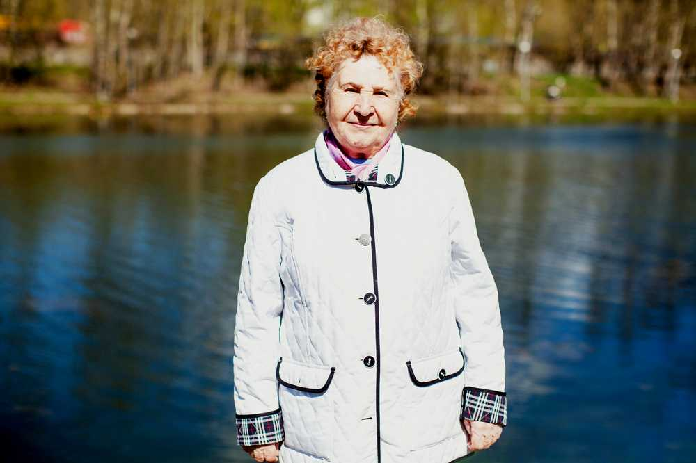В совхозе мы сажали много всего: и картошку, и капусту, и свеклу. Обрабатывали, рыхлили, окучивали, пололи, поливали, убирали, таскали огромные тяжёлые корзины. Работали, в основном, школьники, а взрослые руководили ими и показывали, что делать с рассадой.
Кормили нас всегда хорошо, в столовой. Однажды военрук вывел нас туда группой. Мы шли, разговаривая, и немного ушли вперёд, когда внезапно услышали крик: «Ложитесь!». Не успевая ничего понять, мы бросились на землю по команде военрука и увидели, как на довольно небольшой высоте от нас пролетал самолёт, который начал стрелять. К счастью, все выжили и никто не пострадал (хотя могли бы, не среагируй мы вовремя), но, наверное, именно в такие моменты приходит осознание того, что происходит вокруг, того, что такое война.
Самым тяжёлым для нас стал 1942 год, когда немец был под Москвой. Везде царил голод и пустота, никто не знал, что будет дальше. Ничего не работало, на улицах не было ни души! Даже страшно вспоминать об этом. Мы ели всё, любые мелочи — картофельные очистки, лебеду, крапиву. А как иначе? Зато выжили.
Война — невероятная школа жизни. В то время мы научились всему — я, в частности, начала готовить с 12 лет. Моя мама работала на соседнем заводе, и я носила ей еду — всю, которую могла. Когда были бомбёжки, мы спускались в бомбоубежища. Но так как они происходили довольно часто, многим из нас надоело постоянно прятаться. Вот и я как-то раз ночевала дома одна и, услышав вой сирены, решила не спускаться в убежище, а переждать бомбёжку дома. Когда прямо под окном упала бомба, моя кровать отлетела к противоположной стенке. Не знаю, как я не поседела тогда. Больше я при объявлении тревоги дома не оставалась.
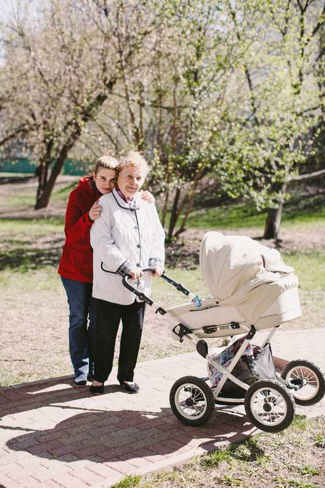В день, когда объявили о Победе, мы были счастливы. Я никогда не забуду тот момент, когда все поехали на Красную Площадь — даже сейчас закрываю глаза и вижу его. Сколько там было народу! Все прыгали, кричали, плакали, столько радости было вокруг! Честно говоря, я даже не помню, как мы тогда добирались домой, ведь эмоции переполняли нас. Сейчас смотришь на отношения между людьми, и сложно поверить в то, что когда-то наш народ был единым целым, что было такое время и был такой день, когда мы все безумно любили друг друга и гордились тем, что есть на Земле наш родной русский народ. Как жаль, что это всё забывается.
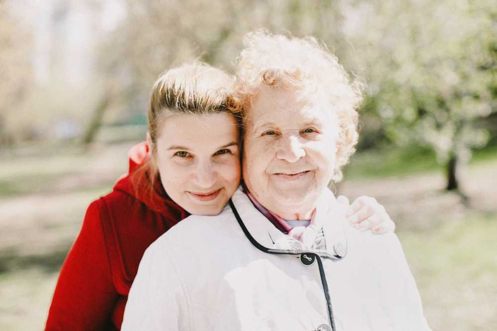Ксения, внучка:
Для меня моя бабушка — образец настоящей Женщины, которая при любых обстоятельствах, даже самых сложных, остаётся ей. Разумеется, мало того, что я просто её безумно люблю, я ещё и восхищаюсь ей, её способностью держаться, несмотря ни на что. Бывают дни, когда всё, кажется, идёт не так, хочется поныть, но я смотрю на бабушку и понимаю, что просто не имею права этого делать. Она очень вдохновляет меня и мою семью на то, чтобы жить полной жизнью.
Она по сей день ухаживает за собой. Спрашиваешь, что подарить ей на День рождения, а она отвечает «Мне бы новую блузочку какую-нибудь!». Даже в то время, когда бабушка лежала в больнице, она просила доктора не заходить к ней, пока она не снимет бигуди и не приведёт себя в порядок. Что уж говорить, бабушка до сих пор получает предложения выйти замуж и имеет вокруг себя несколько ухажёров!
Накануне войны мы с сестрой и бабушкой были на даче. Мне было шесть лет. 22 числа рано утром прилетел папа — он у меня был военным лётчиком — и бросил нам пакет с запиской «срочно вернуться в Ленинград». В этом городе мы жили в прекрасном доме, — великолепном особняке на Английской набережной — но очень близко к нему находилась судоверфь, поэтому нас бомбили каждый день.
Во время бомбёжек нам предлагалось уйти в убежище, но оно было совсем не приспособлено для жизни и, в частности, для детей, поэтому туда мы спустились только один раз, после чего бабушка сказала, что мы будем стоять возле стенок в нашей квартире, поскольку они были толстыми, в несколько кирпичей. Так, до конца всех бомбежек мы стояли около стен. Я совершенно не помню жуткого чувства голода. В таком раннем детстве особенно запоминаются только короткие яркие эпизоды.
В 1942 году воинская часть нашего папы решила вывезти из города несколько семей, несмотря на невозможность покинуть его и блокаду. Нам нужно было добраться до этой части самостоятельно, поэтому бабушка взяла санки и повезла нас туда сама. В том году была очень холодная зима, а мы с самого центра Ленинграда добирались до этого аэродрома три дня на одних только саночках по жуткому морозу, голодные, поэтому как мы туда доехали — уму непостижимо. К сожалению, на месте папу мы не застали: ещё рано утром его отправили в полёт. Вечером того же дня с аэродрома пришли люди и стали забирать его личные вещи. Оказалось, что он погиб.
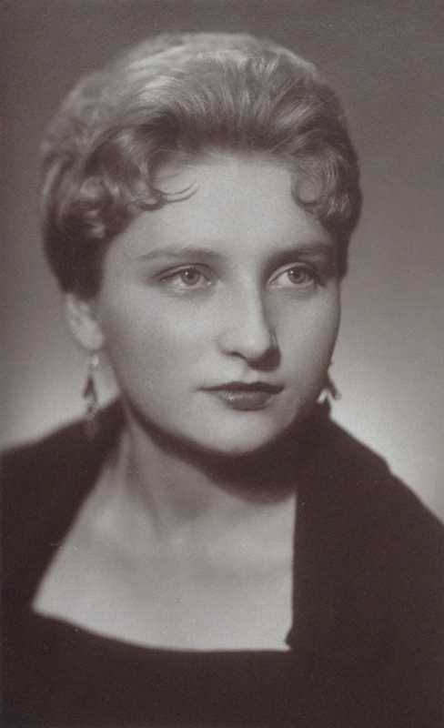На следующий день должен был состояться наш вылет. Как только наш самолёт поднялся в воздух, сразу, откуда ни возьмись, появились немцы и начали нас атаковать. Наши великолепные лётчики не только успешно отбились от них, но и вывезли нас в Вологодскую область. Как только наш самолёт приземлился на аэродроме, бабушка вспомнила, что недалеко от него, в деревне Пестово, жили наши родственники. Как только мы добрались до них, нас сразу начали кормить хлебом, но, видимо, я от жадности переела, и у меня начался заворот кишок. Слава Богу, меня спасли.
Таким образом, жили мы с 1942 года до конца войны в этой деревне. Сестра у меня в то время была маленькой, поэтому она сидела в основном дома, а я ходила за три километра в школу и столько же, в другую сторону, за хлебом, выдаваемым только по карточкам. В школе писать было не на чем, нам давали церковные книги, в которых мы между строчек писали пером. Чернил у нас не было, поэтому мы делали их сами: выдавливали зелень из зёрен, которыми засевали поля на зиму.
Конечно, были разные тяжелые моменты, но, к счастью, я их мало запомнила. Мой муж, поскольку ему было на 10 лет больше, чем мне, участвовал в войне и голод запомнил до конца своей жизни. Он всё время переживал, когда какого-то продукта не было в доме. Такая же ситуация была и с моей приятельницей, которая всего на полгода меня старше — у неё страх голода был невероятный. Все переживали это ужасное время по-разному. Другу моего мужа было 15 лет, когда началась блокада, и он остался здесь, в городе, пошёл работать на завод.
Все заводы в то время стали выпускать оружие. Станки были высоко, и чтобы доставать до них, подростки ставили себе под ноги ящики — работа, сами понимаете, была совсем недетская. Ночевали они на заводе, чтобы лишний раз не выходить на улицы и не попасть под обстрел. Он рассказывал, что в то время все мучились от ужасного голода. До сих пор не понятно, как людям — и, в особенности, подросткам — удавалось работать, ведь нехватка еды оставляла всех их без сил. Вообще, дистрофия тогда, конечно, была самой страшной болезнью, забиравшей жизни многих, но не всех. Во время блокады все ходили по квартирам (они были открыты) и осматривали их. Слабых увозили в больницы, и там им помогали врачи — только так многие люди смогли выжить.
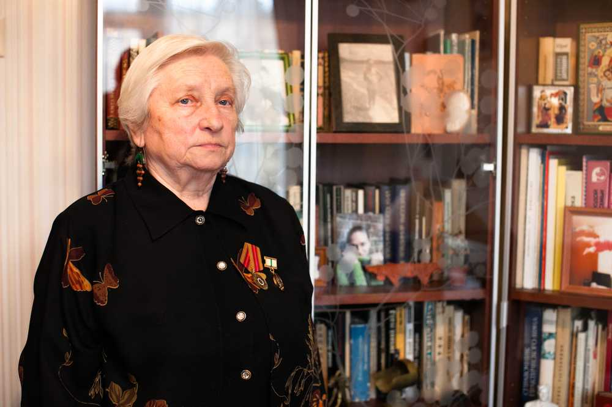
Женщины, которые работали на заводах, рыли окопы в разных концах города. Одних туда вывозили на транспорте, другие же шли на многокилометровые расстояния пешком. Подростки дежурили на чердаках и следили, чтобы попавший снаряд, если он не разрывается, не спалил дом, после чего зарывали такие снаряды в песке.
Во время блокады работали театры, и целые труппы выезжали на фронт. В 1944 году начала работать театральная студия, куда и пошёл учиться друг моего мужа.
После войны мы очень долго возвращались домой: в поездах не было мест, прямых рейсов до Ленинграда не было, поэтому нам приходилось ехать в разных составах. Большинство поездов шло на фронты, чтобы вывозить оттуда солдат, поэтому это всё было очень сложно. После войны в город пускали только по пропускам, и тем, у кого там не осталось никого из близких, пришлось очень нелегко. Нам очень повезло, потому что наша родственница, тётя Оля, пережила блокаду и дистрофию, которой она заболела в то время, и в 1945 году смогла попросить для нас пропуск. Так, в ноябре мы уже приехали в Ленинград — в наш родной город.
Мы пошли в школу, стали участвовать в восстановлении Ленинграда и во всех общественных делах, и при этом я занималась спортом (что было совершенно доступно), каталась на коньках, занималась академической греблей.
Училась я неважно, потому что отстала по русскому языку очень сильно. Мы приходили в 8 утра в школу, шли во двор, брали пилы и пилили совершенно сырые дрова, которые вылавливали из реки Пряжки и Мойки, чтобы протопить школу. Всё делали сами. Затопим печь, дым идет, мы сидим замёрзшие — одеть-то особо нечего. Несмотря на всё это, все были веселыми и радостными. Наша директор была историком, поэтому всю историю мы проходили в музеях. Все занимались в разных секциях во Дворце пионеров.
Это было удивительное и потрясающее время: мы жили в таком прекрасном городе, никто не рыдал, не ныл, все вкалывали. Нас даже пускали в клеть метро перед его открытием, и мы там делали разную чёрную работу. Осенью и весной все ездили в колхоз на сенокосы, на уборку картошки. Зимой — на овощную базу перебирать овощи. Всё было нормально.
Никто не жаловался — ведь всё, что мы делали, было для нашего общего блага. Для нашей общей счастливой жизни.
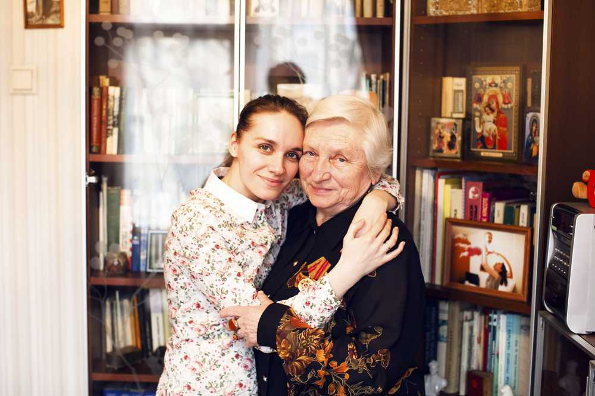Мария, внучка:
Я горжусь своей бабушкой, Валентиной Петровной, потому что, несмотря на все сложности в своей жизни, она осталась очень светлым, добрым и открытым человеком. В два года она потеряла маму, а в семь лет — папу, пережила с сестрой и бабушкой страшное время блокады в эвакуации в заброшенной деревне, где был голод, а по возвращению вернулась с ними в пустую и разрушенную квартиру и, не имея средств к существованию, каким-то неведомым мне образом налаживала быт. Её не сломала война, не убила в ней человечность, не сделала жестокой, она всегда была оптимистом! Бабушкины руки для меня всегда были и останутся самыми нежными руками на свете, а её глаза всегда смотрели и смотрят самым нежным взглядом. Я горжусь ей ещё и потому, что недавно, перенеся две тяжёлые операции и имея серьёзные проблемы с сердцем, она увидела свою правнучку. Я очень люблю бабушку!
В 1941 году я был ещё совсем пацаном — на тот момент мне исполнилось только пять лет. Немцы пришли в мою родную деревню Радица Брянской области где-то в сентябре. За неделю до их прихода мы все слышали, как начали взрывать склады с оружием, располагавшиеся прямо за лесом — это наши войска, которые не успевали отступать, уничтожали боеприпасы. Забегая вперёд, скажу, что уже после войны мы с ребятами ходили в те места и находили огромное количество патронов, винтовок и прочего.
Одним словом, немцы дошли до наших краёв очень быстро — всего за три месяца. Самый настоящий блицкриг! Я сам видел, как спешно отступали наши войска, как многих брали в окружение. Помню, как из окружения вырвался мой дядя, брат моей мамы, и пришёл к нам в дом, когда наша деревня уже была оккупирована немцами. Представьте, он в советской шинели, а по всей деревне ходят немцы. Моя мама быстро перешила эту шинель и покрасила, смешно сказать, в фиолетовый цвет! (Смеётся.) Через несколько дней он ушёл в свою родную деревню, которая располагалась по соседству с нашей, где вступил в ряды партизан. Причём, он был якобы полицаем, передавая при этом всю необходимую информацию партизанам. Однако в какой-то момент нашёлся предатель среди своих, и его казнили. Да, предателей было много. Конечно, трудно сказать, как повёл бы себя каждый из нас перед лицом смерти. Мы же не узнаем этого, пока сами не окажемся «у стенки». Вот и в моей деревне был полицай, а точнее — староста. Он, как мог, выявлял партизан, и организовывал на них облавы: у нас отбирали лыжи и шли в лес, буквально устраивая на них охоту. Если в какой-либо семье кто-то ушёл в партизаны — всё, семьи нету. Помню был у меня друг, с которым мы играли, бегали вместе по деревне, а потом он раз, и резко пропал. Позже оказалось, что его отец ушёл партизанить, и всю его семью, включая моего друга, расстреляли.
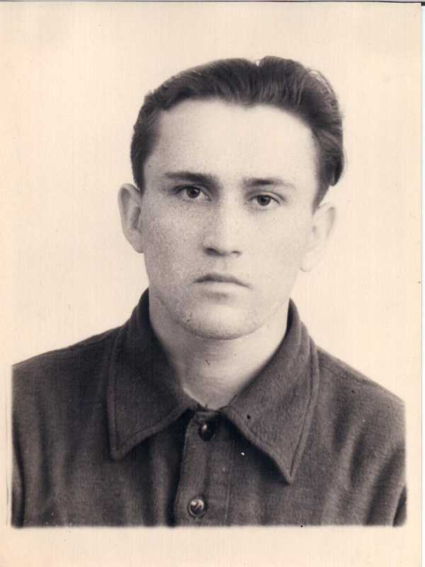Под немцами нам жилось по-всякому. Самое главное — это постоянный страх. Придёт немец с винтовкой, а мы там знаем, кто он такой, какое у него настроение? Хотя немцы были очень разные, надо сказать, в том числе и неплохие ребята: по прошествии семидесяти с лишним лет я уже могу это сказать. Больше всего боялись людей в чёрной форме — СС. С ними разговор короткий: в случае чего они просто расстреливали либо увозили в концлагеря. Между прочим, СС боялись даже сами немецкие солдаты. К тому же, не все из них были фашистами. Например, в нашем доме квартировался один немец, который если чего не доедал из своего пайка — отдавал нам. Так поступали далеко не все. Питались мы самыми простыми продуктами — молоком и тем, что давал огород, в основном картошкой. Всё остальное немцы у нас забирали: свинину, кур, яйца и прочее. Могли прийти посреди бела дня, заглянуть в печку — у нас была русская печь в доме — и взять оттуда всё, что им понравится. Либо спрашивали у моей мамы: «Матка! Кура, яйко, шпик?». Ну а что она могла им дать? И так уже всё забрали.
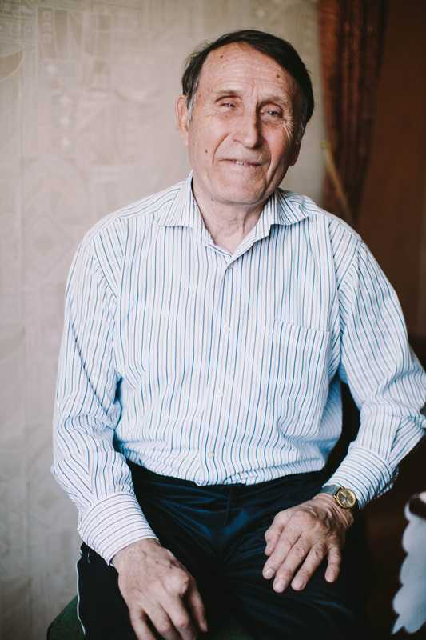Незадолго до снятия оккупации немцы хотели угнать мою семью на запад — в концлагерь. Лошадей не было, поэтому впрягли в телегу корову и поехали. В то время на немецких повозках работали наши же военнопленные. Уж не знаю, как они себя вели в остальных случаях, но нам они попались очень хорошие — предложили перезти нас всех обратно. Меня спрятали на дно повозки и так и переправили назад в деревню. Правда, немцы заставляли проверять содержимое всех повозок вилами, есть ли на дне кто-то живой или нет. Меня спрятали с краешка на самое дно, и наши военопленные делали вид, что в телеге никого нет. В ином случае, даже не знаю, что бы со мной стало.
День нашего освобождения я помню хорошо, он был очень солнечным. Мы занимались своими делами и неожиданно услышали грохот сапог и гром голосов. Это были наши солдаты, которые строем вошли в деревню с песней «Вставай страна огромная». Это было очень сильно. Даже когда я говорю об этом, слёзы подступают к глазам...
Всех их, конечно, обступили жители, начали обнимать. Солдаты, в свою очередь, кормили нас тушенкой: как сейчас помню, какая она была вкусная и ароматная. На этом и закончилась наша оккупация, которая продлилась два года.
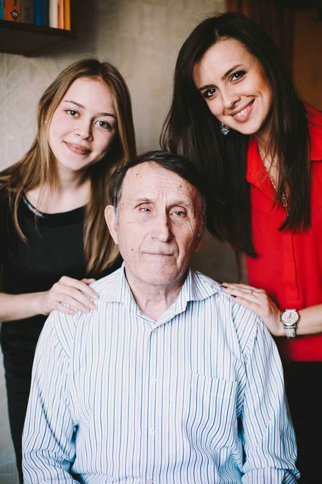Ольга, внучка:
Наш дедушка до сих пор твёрд духом, всегда заряжает нас своей силой, энергией, патриотизмом и любовью к родине.
Ксюша, внучка:
Когда дедушка рассказывает о войне, он чаще всего вспоминает какие-то светлые моменты. Мне кажется, для такого настроя нужно быть очень сильным человеком. Не знаю, как поведёт себя кто-то другой, прожив такую войну и потеряв родителей, поэтому я считаю своего дедушку, в первую очередь, очень стойким.
Я родилась в большой семье. Мы — семеро сестёр и два брата — жили с родителями в деревне Шарапово Московской области. Мои родители участвовали в строительстве химического завода, чтобы прокормить себя и своих детей, и однажды приобрели мазанку (прим. — сельский домик), в которой мы все и разместились. Когда началась война, я заканчивала десятый класс. Это был тяжёлый момент для нашей семьи, ведь спустя пять дней после официального её объявления, 27 июня 1941 года, оба моих брата — Сергей и Георгий — были призваны на фронт. После окончания школы я пошла работать на новый химический завод, где варили специальную смолу для самолётов. В тот момент, когда немец подошёл к Москве, завод эвакуировали, мы начали строить баррикады, слышали канонаду, видели самолёты, летавшие над нашим домом — в общем, были готовы ко всему.
В 1942 году вышел приказ Сталина о том, что на штабные фронтовые работы — телефонистками, радистками,телеграфистками, машинистками, переводчицами и т.д. — требовались лица женского пола. Узнав об этом, я пошла к своей подружке Ане Прокудиной и предложила подать заявление в военкомат. Честно говоря, мы сделали это так, шутя, а через неделю нам уже пришла повестка, без шуток. Помню, как мы с родителями собирали меня: мама напекла лепёшек, наварила яиц, папа помогал положить всё необходимое в котомку. Никогда не забуду тот момент, когда я отправилась к подружке, а отец пошёл нас провожать...
В городе Чехов нас зарегистрировали и отправили на распределение в Тулу. Я чётко знала, что пойду в связь. Только в связь и никуда больше! Подруга решила отправиться по моим стопам. Тем не менее на распределении мы с ней разделились — я попала телефонисткой в полк, а она — в дивизию. В Туле мы проходили специальные курсы подготовки в течение трёх месяцев. Сложнее всего мне давалась Азбука Морзе, а вот работать с СТ-35 (прим. — модель буквопечатающего телеграфного аппарата) у меня получалось отлично. В связи с тем, что у меня был очень «дикторский» голос, ясная дикция и отличная память, командир полка всегда ставил меня на полёты. Главным моим инструментом был коммутатор: я должна была знать наизусть все 120 номеров, и то, кому первому отвечать — командиру полка, комиссару или начальнику эскадрильи.
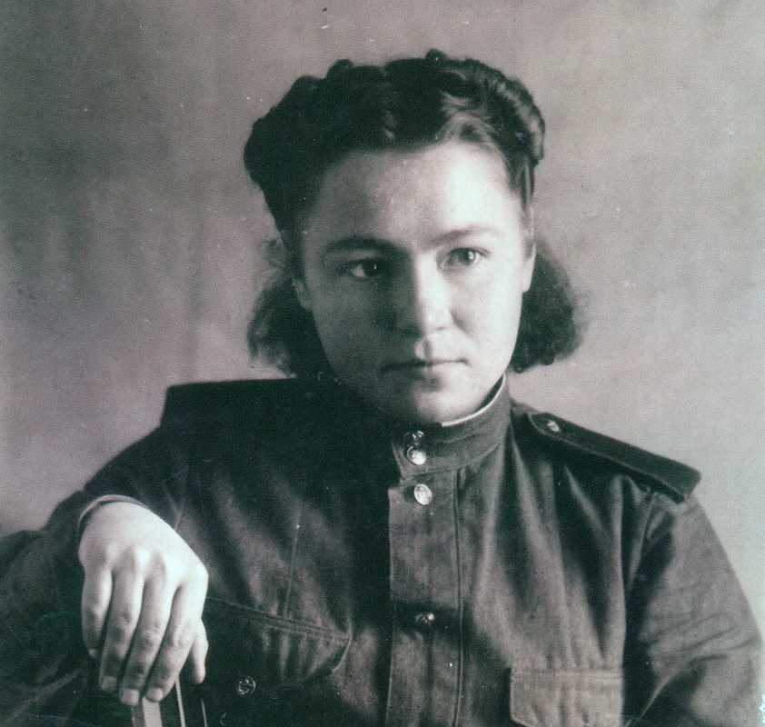Поначалу было сложно привыкнуть к такому режиму. Особенно нервными были ночные вылеты наших бомбардировщиков — уже с 6 часов вечера среди нас начиналась паника. Мне нужно было принимать вызовы начальства, я ждала их с минуты на минуту, а мне звонили взбудораженные техники, задавали какие-то вопросы, на которые я не могла ответить, и ругали меня. Я, впитывая в себя всю эту панику, начинала плакать! (Смеётся.)
Наша рота связи постоянно перемещалась с места на место в западном направлении — советские войска к тому времени сильно отогнали немцев от Москвы. В одной из деревень недалеко от Калининской области, со мной произошёл, наверное, один из самых сильных и запоминающихся случаев военного времени. На ту ночь выпало моё дежурство. Командир собрал всех и сказал: «Сегодня ожидается налёт на наш аэродром, поэтому все — в укрытие, кроме дежурного по роте и телефонистки». Все ушли в окопы, далеко убежали, а мы остались вдвоём. Мне было очень страшно. Не описать словами, насколько. Я спросила своего товарища: «Ну, что нам делать?», а он мне: «Идти! Смерть значит смерть». Наши самолёты улетели бомбить их объекты, а их самолёты — уничтожать наш аэродром. Как сейчас помню: видим два самолёта, один подвесил прожектор и начал освещать территорию, где мы находились, лётное поле. Был такой свет, как будто включили тысячу лампочек — вся земля, как на ладони. Слышим, их бомбардировщик резко снизился и как начал бомбить! Боже! У моего коммутатора все кнопки отскочили! Я выскочила в коридор, схватила шинель, висящую на вешалке, накрыла голову. Такой грохот стоял — представьте, бомбы взрывались на расстоянии 500 метров от нас! Не знаю, сколько времени прошло, пока всё утихло. Выходим на улицу, а там небо слилось с землёй, всё вокруг в коричневом тумане. Это земля поднялась. Сели мы на лавочку и сидим, смотрим в одну точку. Через какое-то время все из нашей роты начали возвращаться: подсаживались к нам, успокаивали. Аэродром оказался весь в гигантских воронках, поэтому нашим самолётам дали приказ садиться на соседний. Ремонтировали его ещё около двух недель.
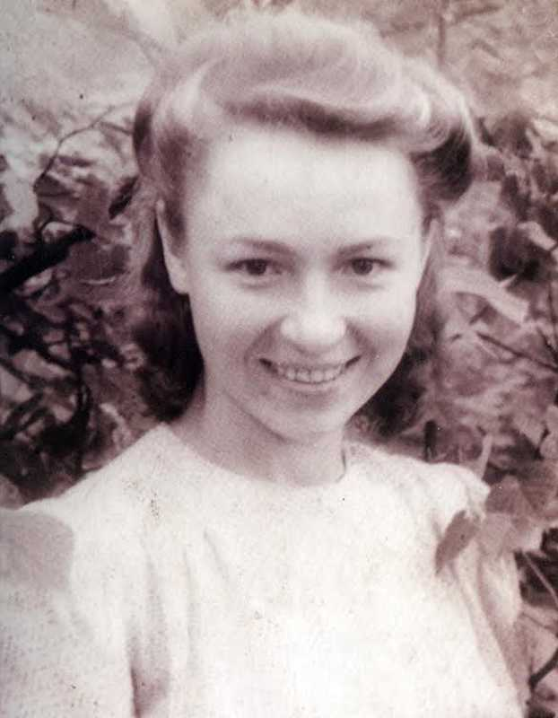Ещё мне очень запомнился переезд в польский город Желудо́к. Нашу роту связи поселили в барак, находящийся немного поодаль от аэродрома. Было очень страшно останавливаться там, так как, по рассказам сослуживцев, до нашего прибытия там случилось ужасное: всю роту молодых девочек-прожектористок перерезали бандеровцы. Так что путь от штаба до дома был пыткой для меня, особенно учитывая тот факт, что пролегал он мимо кладбища. Как же я боялась!
Помимо предыдущей ужасной истории, в моей памяти навсегда отпечаталась та красота, которую я увидела в Польше. Когда нас распределили, то всем выдали белье и велели загружаться в машины — нас везли мыться. Ехали по обычной дороге, а потом неожиданно вышли на липовую аллею, мощёную камнем. Поднимаемся вверх по холму, а на нём царственно возвышается белый дворец. Представляете? Я, обычная деревенская девушка, даже и подумать не могла о том, что такая красота существует. Перед тем, как туда пришли наши части, хозяин покинул дворец на личном самолёте, поэтому все интерьеры, вся посуда, мебель, остались прямо там, нетронутыми.
На войне я познакомилась со своим мужем, Яковом Семёновичем Топуновым. Дело было в Смоленске. Как-то раз у меня было не очень много работы, и я вышла на несколько минут на крылечко дома, в котором располагалась наша станция, подышать воздухом. В этот момент мимо прошёл красивый, статный молодой человек, посмотрел на меня и улыбнулся, хотя мы не были знакомы. Мы все были частью одной роты, поэтому я решила улыбнуться ему в ответ. Тогда я ещё не знала, что это был Яков Семёнович, мой любимый Яша. Ближе мы познакомились после одного забавного случая. Как-то раз, в нашей роте связи решили устроить танцы. Разумеется, мы с подружками очень хотели на них пойти, но лично для меня это было особенно сложно, так как времени на отдых моя работа мне не оставляла: нужно было постоянно следить за приёмом сигналов и прочим. Я решила проскользнуть на этот вечер незамеченной, но, к сожалению, столкнулась лицом к лицу с нашим командиром роты, которого мы все втайне называли «зверь». Результат — шесть суток гаупвахты. Тем не менее, я всё-таки побывала на танцах, и смогла плотнее пообщаться с Яковом Семёновичем, он мне очень понравился.
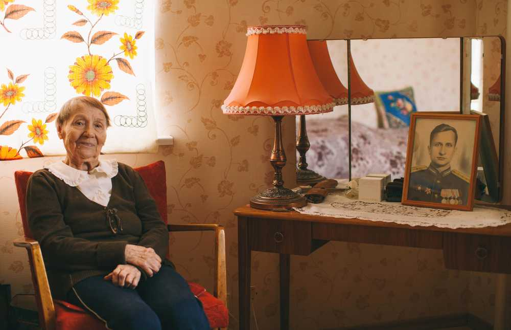 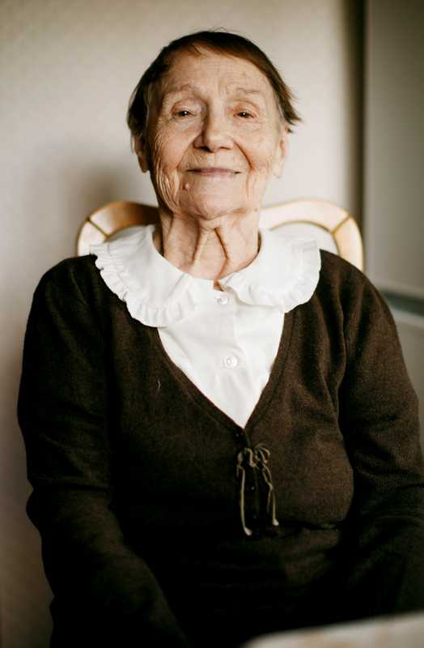На гаупвахте я сидела дважды. Однажды мне «влепили» её за то, что у меня что-то было не так с автоматом. Я, видимо, почистила его и не проверила, а там то ли заржавело что-то, то ли детали какой не хватало, а может, вообще ничего не было, и за всем этим стояли какие-то личные мотивы — не знаю. Так вот, Яков Семёнович сам позвонил командиру полка и попросил меня освободить. Я не знаю, что он там ему наговорил, но меня освободили — правда, дали много другой мелкой работы, но это было не так важно. Более того, нам с Яшей дали десять дней отпуска, и мы вместе полетели в Москву. Этот человек был дан мне Богом.
День Победы я встретила в Польше. После Желудка́ мы переезжали в другой польский город: вокруг красота, люди идут в белых одеждах в костёлы, а мы едем в своей повозке грязные, в потёртых шинелях — было очень неприятно ощущать на себе такой контраст. Поселили нас, конечно, не в городе, а чуть дальше. В тот день была нелётная погода, поэтому вся наша рота сидела в бараке. Лётчики за стенкой лежали по кроватям, нога на ногу, пели песню «Ямщик», да так красиво, ладно, а в соседней комнате разговаривали наш Герой Советского Союза и его жена. Я тоже отдыхала и в какой-то момент уснула. Просыпаюсь ночью — стрельба! Что такое! Мы выскочили на улицу, а там все лётчики, вся наша рота, кто в чём — в рубашках, в кальсонах, подштанниках — прыгают, стреляют, обнимаются, целуются! Подбежал Яша, начал меня обнимать и поздравлять! Как же было здорово! (Смеётся.) Я в жизни не видела такого ликования.
Никогда не забуду день нашего награждения. Я надела красивое платье, пилотку, заплела свои длинные косы, иду в строй ни жива, ни мертва! Я была очень скромной, стеснительной девушкой, хоть и довольно весёлой, поэтому не знаю, как мне удалось пройти такое важное мероприятие и ни разу не упасть от страха. Когда мне вручили медаль, и я возвращалась обратно в строй, эмоции переполняли меня. Это было лучшим завершением тех тяжёлых лет, что я провела на войне.
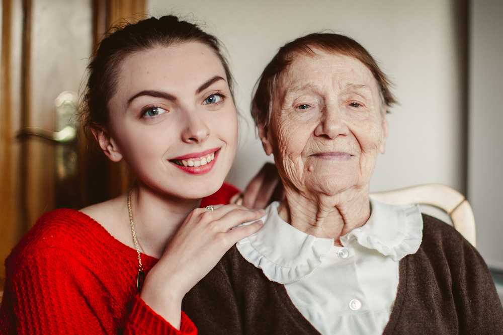Настя, правнучка:
Моя прабабушка всегда ассоциировалась у меня со словом «феноменально». И неспроста — в ней феноменально абсолютно всё, начиная от истории жизни, заканчивая невероятной памятью и способностью запоминать всё то, что не могут запомнить другие. На мою прабабушку хочется равняться — сколько смелости должна иметь молодая девушка в 17 лет, чтобы вызваться на фронт? Большинству современных выпускников и выпускниц школ было бы здорово хотя бы оторвать пятую точку от дивана или компьютерного стула, какая уж там добровольная служба. Надежда Петровна, несмотря на свою природную скромность, всегда могла собирать вокруг себя людей, увлекательно вести беседу и каждый раз рассказывать своим собеседникам что-то новое. Она по сей день следит за собой, любит красиво и элегантно одеваться (знали бы вы, сколько описания её внешнего вида мы сократили в статье — она действительно, была, есть и будет красавицей!), украшения и порядок, как внешний, так и внутренний, духовный. Во всём. Искренне восхищаюсь тобой, моя любимая бабушка Надя! И очень, очень люблю.
Мой прадедушка — Нечипоренко Филипп Владимирович — родился 5 июля 1911 года в большой крестьянской семье, которая в то время жила в селе Красная Каменка, что в центральной Украине. Семья была действительно немаленькой — двое родителей, пятеро мальчиков и две девочки. Для довоенного времени это не было чем-то из ряда вон выходящим, очень многие семьи имели семеро и более детей. Зато отличает эту семью от прочих другой факт — все пятеро братьев, которые в 41-м году ушли на войну, вернулись домой. Да, конечно, были и ранения, и контузии, и личные трагедии (у брата моего прадедушки немцы повесили жену), однако все мужчины семьи Нечипоренко, которые могли держать в руках оружие, в 45-м году вернулись в родное село.
В моей семье сохранился военный билет моего прадедушки Филиппа, поэтому данные о призыве в действующую армию я могу сказать с точностью до дня. 23 сентября 1941 года Филипп Владимирович Нечипоренко был мобилизован в 61-й запасной стрелковый полк бригадиром механизированной бригады, которая отвечала за транспортировку снарядов и обеспечение артиллерии. На тот момент ему исполнилось 30 лет.
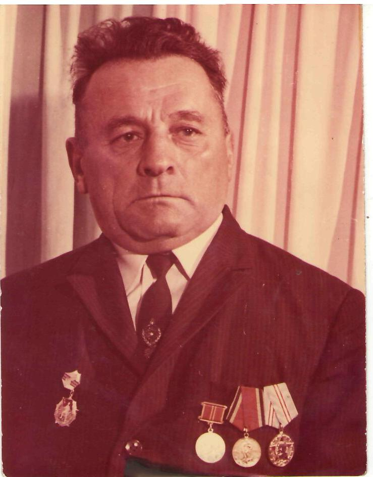За время войны мой прадедушка можно сказать «протопал» всю Восточную Европу — от Сталинграда до Чехословакии через Западную Россию и всю Украину. Когда его полк стоял в Брянске, то его жена, моя прабабушка, вместе с сыном приехала к нему прямо на линию фронта. Не люблю рассуждать об уникальности отдельных народов, но считаю, что на это была способна только русская женщина: добираться по разбитым дорогам на телегах и товарных поездах, не уверен, многие ли решаться на такое. Как потом говорила моя прабабушка, она думала, что это ее последний шанс увидеть своего Филиппа живым.
В Сталинграде с ним произошел случай, который можно описать как счастливый, что для любой войны вообще редкость. Находясь в этом городе, мой прадедушка отправился на рынок, чтобы купить кое-какие продукты. Когда он покупал табак, то заметил рядом с собой мужчину на костылях, лицо которого показалось ему жутко знакомым. Хотел уйти дальше по своим делам, но чувствовал, что какая-то неведомая сила тянет его к этому человеку. Приглядевшись, он воскликнул: «Федя!». Тот ответил: «Филя!». Этим человеком оказался его родной брат — тот самый, жену которого позднее повесили немцы. А теперь представьте, каковы шансы на случайную встречу двух родных людей во время такой войны. В одном месте, в одно время, в одной точке планеты. Мне кажется, что это похоже на небольшое, но чудо.
День Победы мой прадедушка встретил в Чехословакии, хотя за несколько месяцев до этого вполне мог погибнуть. На подходе к границе с этой страной, его полк встретил, казалось бы, обычное препятствие — мост через реку. Однако при отступлении немцы оставляли за собой огромное количество мин, а мосты минировали первым делом. Командир полка отдал сержанту Нечипоренко как бригадиру механизированной бригады приказ лично проверить мост. Фактически это представляло собой проезд по мосту, который в любой момент мог взорваться, а мог и не взорваться. Прадедушка говорил, что на протяжении всего пути через мост он чувствовал каждую мышцу своего тела и буквально сросся с рулем, педалями и коробкой передач своего грузовика. Я не могу представить себе степень этого напряжения, но от действий моего прадедушки зависели жизни всего полка. К счастью, мост оказался незаминированным. По итогам этих событий награжден орденом Великой Отечественной войны 2-й степени.
Известие о победе пришло к нему неожиданно: их полк стоял в лесах Чехословакии, где солдаты услышали далекие крики о том, что война закончилась. Мой прадедушка всегда говорил, что всю значимость и радость этого дня может прочувствовать только тот, кто прошел войну. Однако вернулся домой он далеко не сразу — только в ноябре 45-го. Его бригада принимала участие в очистке дорог, по которым все наши войска возвращались на родину, от искореженной техники, коей скопилось за 4 года немало.
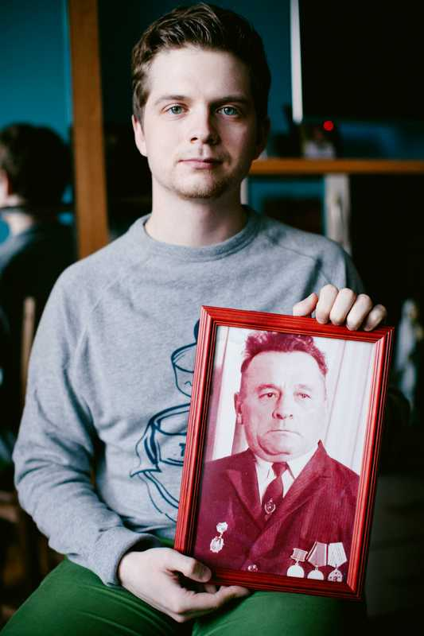К сожалению, с моим прадедушкой мне познакомиться не довелось — он умер за 2 года до моего рождения. Тем не менее, те факты его жизни, которые я знаю, говорят мне обо всем. Мой прадедушка был настоящим патриотом своей Родины. Знаю, сейчас это слово часто коверкают и открыто смеются над ним. Не думаю, что это правильно, потому что настоящие патриоты у нашей страны, да и у любой другой, всегда были и будут. Прадедушка Филипп прошел две войны — Советско-Финскую и Великую Отечественную, — что, несомненно, укрепило его характер и внутренний стержень, который он сохранил вплоть до конца своей жизни. Хорошего внутреннего стержня не хватает сегодня многим, в том числе и мне, поэтому это еще одна вещь, за которую я горжусь своим прадедушкой. Пожалуйста, не забывайте о том, сколько значат для нашей страны такие люди, как он. Они не заслуживают этого.